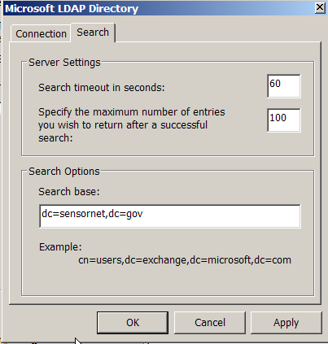
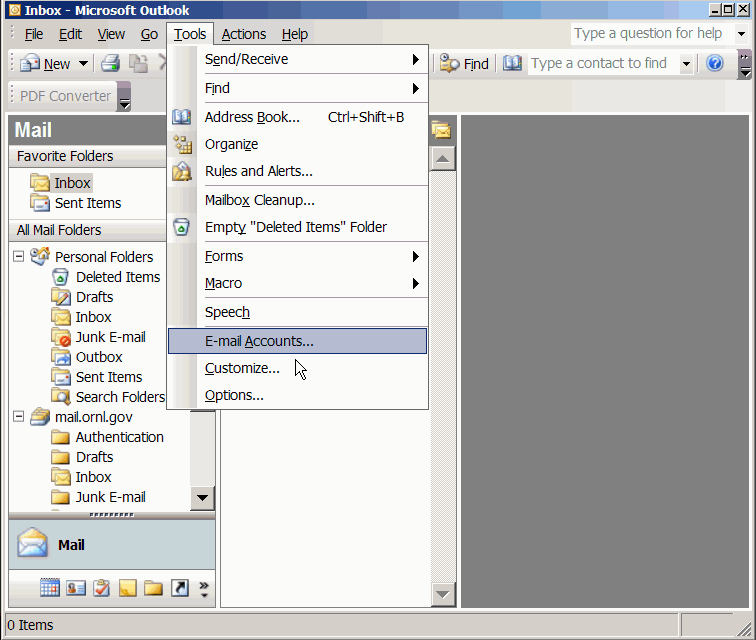
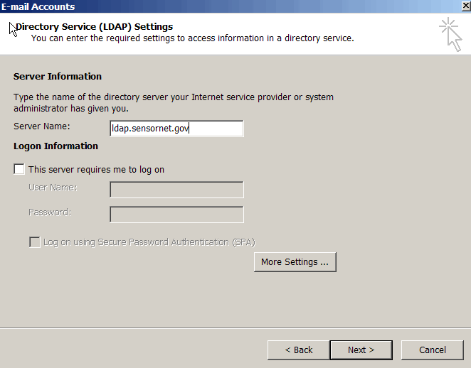
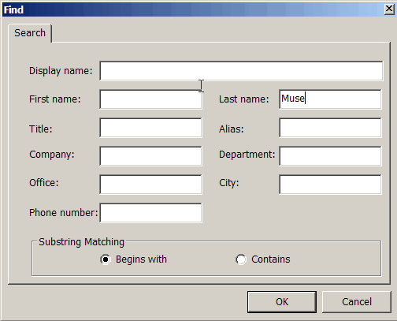
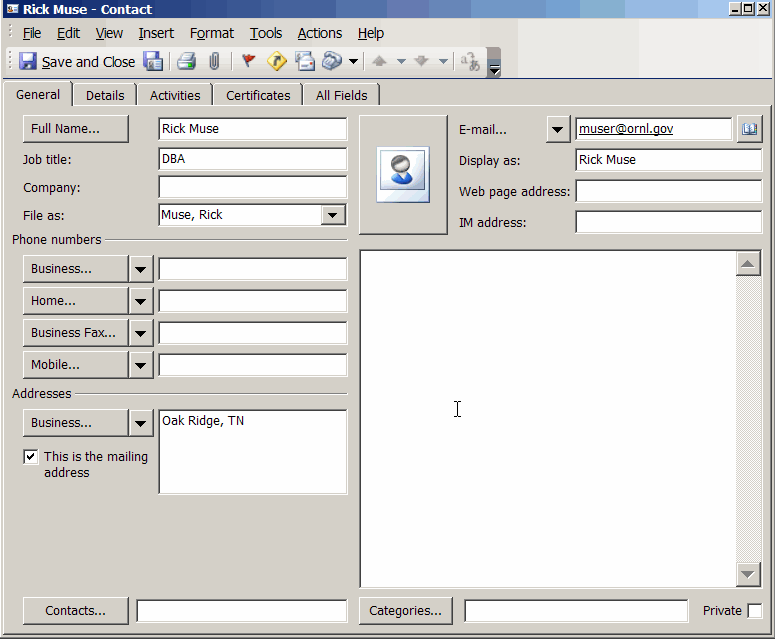
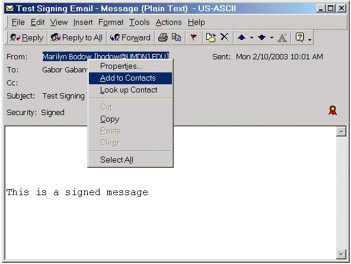

Figure 1.

Figure 2.

Figure 2a.
Figure 3.
 |
 |
Figure 4.

Figure 5.
If you open the address book (in the tools menu) you will see the SensorNet LDAP as an available source as ilustrated by Figure 6.

Figure 6.

Figure 7.
| By now, you probably know that in order to send secure (specifically, encrypted) email to a SensorNet individual, you will need their public key (contained within their digital certificate). How do you get their public key? Well, at SensorNet we store people's certificates in our online directory (LDAP). You can easily retrieve their certificates via the directory and place them into your computer. Listed below are the steps on how to do this. | ||
| First, we're going to make a new directory for Outlook. On the top menubar, go to "Tools" and then "E-mail Accounts" (see Figure 1). | ||
|  Figure 1. |
||
| In this new window, click on the "Directory Service" tab on top, and then click on the "Add" button at the top right hand corner of the window. Choose "Directory Service". (See Figure 2) | ||
| Figure 2. |
||
| Figure 2a. |
||
| You'll now be instructed to enter various bits of
information on different screens. On the first screen, type in "ldap.sensornet.gov"
for the "Internet directory (LDAP) server" field. Click on "Next"
when you finished (see Figure 3). When the wizard finishes, you will
have to restart Outlook. |
||
|  Figure 3. |
||
| Click the "More Settings..." button. The SensorNet
LDAP listens on an SSL connection on port 636, so check the SSL box and
use port 636
(see Figure 4). Also enter SensorNet LDAP for the display name. Also
the the search base to "dc=sensornet,dc=gov"
with no spaces. |
||
Figure 4. |
||
| You will now be at a window which confirms that you have successfully entered in all of your information. Click on "Finish" (see Figure 5). | ||
| Figure 5. |
||
| You must restart Outlook to use this new LDAP. If you open the address book (in the tools menu) you will see the SensorNet LDAP as an available source as ilustrated by Figure 6. |
||
| Figure 6. |
||
| Now we have to set up Outlook to use digital certificates. Go to "Tools | Options" from the top menubar. Select "Security" from the tabs, and then click on the "Settings" button. You should then see a new window illustrated by Figure 7. | ||
| Figure 7. |
||
| At this window, enter any name you wish for the "Security Settings Name", and for the "Secure Message Format", choose "S/MIME". In the "Signing Certificate" box, click "Choose", and then choose your digital certificate (if it has been installed). Repeat for the "Encryption Certificate" box. Finally, select the "Send these certificates with signed messages" checkbox. Press "OK" when done. |
| Now we can search for people's digital certificates at SensorNet. On the main menubar, click on "Tools | Address Book". In the Address Book window, click on the "Find People" button. You should now be a window that looks like the one illustrated by Figure 8. | ||
|  Figure 8. |
||
| Make sure that the SensorNet directory that you specified above is in the "Show names from the:" drop-down menu. Now, supply either the name or the email address of the recipient to whom you wish to send encrypted email, and click on the "Find Now" button. You'll see the entry (or entries) show up in the lower half of the window. Highlight the desired entry, and then click on the "Properties button. You'll see another window pop up, which should look like the one illustrated by Figure 9. | ||
|  Figure 9. |
||
| Click on the "Add to Contacts" button (second from right), or right-click the name and select "Add to contacts", and then select the "Certificates" tab at the top. If you see any listings for the person(s) you searched, it means that you are able to send encrypted email to them! (See Figure 10) | ||
 Figure 10. |
||
| If you click the properties
button on the certificate page, you can see the contents of the
certificate (Figure 11). The default trust for the certificate (and you
must trust it to use it) is that it inherits its trust from the issuing
Certificate Authority, so be sure to visit the SensorNet CA page and
import the certificate into your Internet Explorer. IE stores all the
CA certificates for Windows, |
||
|
||
| Congratulations! The person's digital certificate has been
imported to your computer. You can now send this person encrypted
email. |
||
| If
you had used Mozilla or Netscape 7x, it would not be necessary to
manually import a certificate into your address book in order to send
the user e-mail. They are smart enough to go to the LDAP and find the
certificate for you, and also import it into your address book. |
| An Alternate Method... There is also another method of retrieving a person's digital certificate. Anyone who sends you a digitally signed email will already have their public key automatically associated with their address. Open up the message and right-click on the person's email address to "Add to Contacts" (see Figure 12). |
|  Figure 12. |
| In the Contacts window, click on the "Save and Close" button near the top left-hand corner (or from the "File" menu) to add this person to your Address Book. |
| After you've done this, you can then verify that they have a digital certificate by opening your Address Book, highlighting the individual, and clicking on Properties (see Figure 13). Then click on the "Certificates" tab at the top, and the resulting window should appear similar to Figure 10. You should see digital IDs, or certificates, associated with this person. This enables you to send them encrypted email (read below for more information). |
 Figure 13. |
| Now that you have your recipient's digital certificate in your computer, it's very easy to send an encrypted email. Go to compose an email as you normally would. However, before sending it, on the top menubar, click on "View | Options" to bring up the "Message Options" window, and then click the Security Settings... button, which should look familiar to that illustrated by Figure 14. |
 Figure 14. |
| To encrypt your email message, click on the checkbox entitled "Encrypt message contents and attachments" near the top left-hand corner of this window. Click on the "OK" button at the bottom to close the Security Properties dialog and "Close" to exit the Message Options window. Send your email, and the recipient will then be able to decrypt the email when s/he receives it by entering the passphrase to his/her private key when prompted. |
| Please note that if you do not have the recipient's digital
certificate in Outlook's database, you cannot send encrypted
email to them. If you try, you will see an error message (shown in
Figure 18) which will notify you that you do not have the recipient's
digital certificate. At this point, you may choose to either send the
email un-encrypted, or cancel the message altogether. Please read the
above section entitled "Retrieving Other People's Digital Certificates"
if you wish to send them an encrypted email. Other mail clients (such
as Mozilla) will get the certificates automatically from the LDAP
server. |
 Figure 18. |
| Digitally signing email is similar to the procedure outlined just above for sending encrypting email. The only difference is that you will have to check the box marked "Add digital signature to outgoing message" (see Figure 17) before sending your message, and when you are ready to send your digitally signed email, you will be prompted to enter the passphrase for your digital certificate (see Figure 19). After you enter it, your email will be sent, digitally signed. |
 Figure 19. |